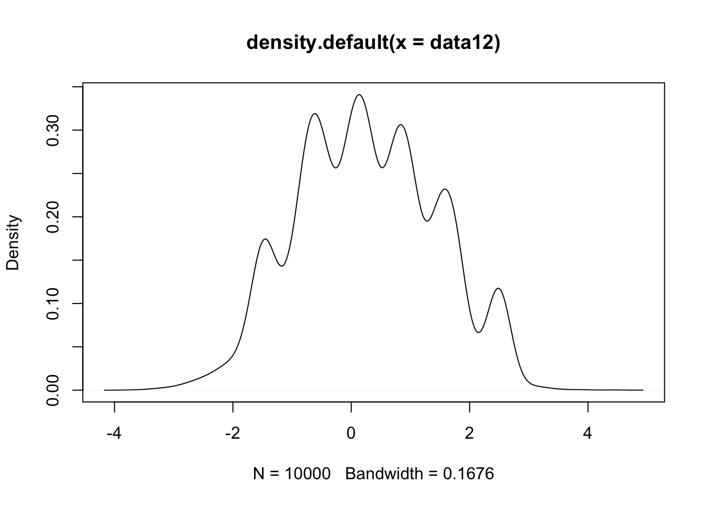

Stat374 HW2
Zihao_Wang
10/26/2018
Last updated: 2018-11-03
workflowr checks: (Click a bullet for more information)-
✖ R Markdown file: uncommitted changes
The R Markdown file has unstaged changes. To know which version of the R Markdown file created these results, you’ll want to first commit it to the Git repo. If you’re still working on the analysis, you can ignore this warning. When you’re finished, you can runwflow_publishto commit the R Markdown file and build the HTML. -
✔ Environment: empty
Great job! The global environment was empty. Objects defined in the global environment can affect the analysis in your R Markdown file in unknown ways. For reproduciblity it’s best to always run the code in an empty environment.
-
✔ Seed:
set.seed(20181007)The command
set.seed(20181007)was run prior to running the code in the R Markdown file. Setting a seed ensures that any results that rely on randomness, e.g. subsampling or permutations, are reproducible. -
✔ Session information: recorded
Great job! Recording the operating system, R version, and package versions is critical for reproducibility.
-
Great! You are using Git for version control. Tracking code development and connecting the code version to the results is critical for reproducibility. The version displayed above was the version of the Git repository at the time these results were generated.✔ Repository version: 6add893
Note that you need to be careful to ensure that all relevant files for the analysis have been committed to Git prior to generating the results (you can usewflow_publishorwflow_git_commit). workflowr only checks the R Markdown file, but you know if there are other scripts or data files that it depends on. Below is the status of the Git repository when the results were generated:
Note that any generated files, e.g. HTML, png, CSS, etc., are not included in this status report because it is ok for generated content to have uncommitted changes.Ignored files: Ignored: .DS_Store Ignored: .Rhistory Ignored: .Rproj.user/ Ignored: data/.DS_Store Untracked files: Untracked: code/DirProcess.r Untracked: code/hw2.Rmd Untracked: code/hw2.pdf Untracked: data/hw2/coverage1.rds Untracked: data/hw2/coverage2.rds Untracked: data/hw2/coverage3.rds Untracked: data/hw2/modes12.rds Unstaged changes: Modified: analysis/hw2.Rmd
Expand here to see past versions:
rm(list=ls())
set.seed(12345)
options(warn = -1)
knitr::opts_knit$set(root.dir = '~/Desktop/stat374-fall-2018/analysis/')
library(kedd)
library(locfit)locfit 1.5-9.1 2013-03-22library(gridExtra)
library(reshape)
library(gam)Loading required package: splinesLoading required package: foreachLoaded gam 1.16library(MASS)
library(mvtnorm)
#library(tidyverse)
suppressMessages(library("tidyverse"))1 The Mean Shift Algorithm
(a)
Since we do not know the true \(p(x)\), we can only find modes approximately on \(\hat{p}_n(x)\). We can find one solution of the differential equation by Gradient Descent determined by the starting point \(w\): \(w_{t+1} = w_t + \eta \hat{p}_n(w_t)\), with \(w_0 = w\). If we define \(\alpha := \frac{\eta}{h^2}\) and write out that equation, we have:
\[ w_{t+1} = w_t - \frac{\eta}{h^2} \sum_{i= 1}^n (w_t -x_i) K(\frac{w_t-x_i}{h}) = \alpha \sum_{i = 1}^n x_i K(\frac{w_t-x_i}{h}) + w_t(1-\alpha \sum_{i=1}^n K(\frac{w_t-x_i}{h}))\] Therefore, when we set \(\alpha = \frac{1}{\sum_{i=1}^n K(\frac{w_t-x_i}{h})}\), we have the \[ w_{t+1} = \frac{\sum_{i = 1}^n x_i K(\frac{w_t-x_i}{h})}{\sum_{i = 1}^n K(\frac{w_t-x_i}{h})} \]
(b)
K <- function(x){
return((1/sqrt(2*pi)) * exp(-0.5*x^2))
}
GD <- function(w,X,h,max_step = 100, epsilon = 0.01){
num_step = 0
while(num_step < max_step){
w_old = w
k_diff = K((X-w)/h)
w = (t(X) %*% k_diff) / sum(k_diff)
if (abs(w-w_old) < epsilon) break
num_step = num_step + 1
}
return(w)
}data11 <- read.table("../data/hw2/meanshift-500.txt", header = FALSE)
data12 <- read.table("../data/hw2/meanshift-10k.txt", header = FALSE)
data11 <- data11[,1]
n1 = length(data11)
data12 <- data12[,1]
n2 = length(data12)plot(density(data11))
Expand here to see past versions of unnamed-chunk-4-1.png:
| Version | Author | Date |
|---|---|---|
| 6add893 | zihao12 | 2018-10-30 |
idx1 = sample(1:n1, 100, replace = FALSE)
modes11 <- sapply(data11[idx1], function(x) GD(x,data11,h = 0.5))
plot(modes11)
Expand here to see past versions of unnamed-chunk-5-1.png:
| Version | Author | Date |
|---|---|---|
| 6add893 | zihao12 | 2018-10-30 |
Comment:
From the scatter plot of our estimated modes, we can see that the mean shift algorithm finds two most prominent modes around 0. Most of the sampled points converge to one of the two modes.
plot(density(data12))
Expand here to see past versions of unnamed-chunk-6-1.png:
| Version | Author | Date |
|---|---|---|
| 6add893 | zihao12 | 2018-10-30 |
idx2 = sample(1:n2, 1000, replace = FALSE)
# modes12 <- sapply(data12[idx2], function(x) GD(x,data12,h = 0.5))
# saveRDS(modes12,"../data/hw2/modes12.rds")
modes12 = readRDS("../data/hw2/modes12.rds")
plot(modes12)### Comment: * Our algorithm finds two modes. * However, this time the data have many modes but we only find the top two modes. * It is possible that our sample size is not big enough, so that the points near other modes are not sampled frequently. * Also, a small proportion of the starting points fail to converge to one of the modes.
2 The Wizard of Ozone
#install.packages("fields")
library(fields)Loading required package: spamLoading required package: dotCall64Loading required package: gridSpam version 2.2-0 (2018-06-19) is loaded.
Type 'help( Spam)' or 'demo( spam)' for a short introduction
and overview of this package.
Help for individual functions is also obtained by adding the
suffix '.spam' to the function name, e.g. 'help( chol.spam)'.
Attaching package: 'spam'The following objects are masked from 'package:base':
backsolve, forwardsolveLoading required package: maps
Attaching package: 'maps'The following object is masked from 'package:purrr':
mapSee www.image.ucar.edu/~nychka/Fields for
a vignette and other supplements. data(ozone2)(a)
Our 2D kernel estimation is
\[ \hat{f_n}(x,y) = \sum_{j = 1}^n l_j(x,y) Z_j; \ l_j(x_i, y_i) = \frac{K(\frac{X_j-x_i}{h}) K(\frac{Y_j-y_i}{h})}{\sum_{k = 1}^n K(\frac{X_k-x_i}{h}) K(\frac{Y_k-y_i}{h})} \] And to find the optimal \(h\) using cross-validation, we have the following formula: \[ CV = \hat{R}(h) = \frac{1}{n} \sum_{i = 1}^n (Z_i - \hat{f}_n^{(-i)} (x_i,y_i))^2 = \frac{1}{n} \sum_{i = 1}^n (\frac{Z_i - \hat{Z_i}}{1-L_{ii}})^2 \]
In computation of cv score, we need to obtain \(L\). I detail the procedure below:
First, obtain the \(L_{unweighted}\) by doing element wise product between \(K_X, K_Y\), where \((K_X)_{i,j} = K(\frac{X_j - X_i}{h})\), \((K_Y)_{i,j} = K(\frac{Y_j - Y_i}{h})\).
Then normalize \(L_{unweighted}\) so that each of its row sums to one.
xs <- seq(-93,-82,.1)
ys <- seq(40,46,.1)
X = ozone2$lon.lat[,1] ## X of training data
Y = ozone2$lon.lat[,2] ## Y of training data
Z = ozone2$y[which(ozone2$dates == "870618"),]
Z[is.na(Z)] = 0 ## set NA to 0cv <- function(X,Y,Z,h){
# compute L
n = length(X)
## compute K_X
X_rep = replicate(n,X) ## X_rep = [X,X,...X]
K_X = K((t(X_rep) - X_rep)/h) ## K_X_ij = K((Xj-Xi)/h)
## compute K_Y
Y_rep = replicate(n,Y) ## Y_rep = [Y,Y,...Y]
K_Y = K((t(Y_rep) - Y_rep)/h) ## K_Y_ij = K((Yj-Yi)/h)
## compute L_unweighted
L_unweighted = K_X * K_Y
## normalize L_unweighted so that row sums to 1
D = diag(1/rowSums(L_unweighted))
L = D %*% L_unweighted
# compute Z_hat
Z_hat = L %*% Z
## compute CV
one_minus_Lii = 1-diag(L)
if (min(one_minus_Lii) == 0) one_minus_Lii[one_minus_Lii == 0] = 1e-50 ## Without this, some of the elements might be zero and cause the result to be NAN
CV = mean(((Z-Z_hat)/one_minus_Lii)^2)
return(CV)
}hs2 = seq(2,10,1)
hs1 = seq(0.1,1,0.1)
hs0 = seq(0.01,0.09,0.01)
hs = c(hs0,hs1,hs2)
CVs = sapply(hs,function(h) cv(X,Y,Z,h))
h_opt = hs[which.min(CVs)]
print(paste0("optimal h is ",h_opt))[1] "optimal h is 0.2"## because some of the CVs blow up, I decide to throw them away for plotting
keep = which(CVs < 1e+10)
plot(hs[keep],CVs[keep])(b)
My analogous algorithm is a more discrete version. This is a “mountain climbing”, algorithm; instead of seaching the entire domain of \((X,Y)\), we search among the points in the grid. So suppose we start from \((x_i,y_j)\), we search the neighboring points (the four closest points),find the one with the highest value of \(Z\) (the ozone level) and update \((x_{i+1},y_{j+1})\) to that point; we do so iteratively.
mountain_climbing <- function(x_start, y_start,xs,ys,zs,max_iter = 100){
## (x_start, y_start) is the starting position; range is min(xs):max(xs) for x_start, min(ys):max(ys) for y_start
## xs, ys are the coordinates of the points in the grid; they are vectors
## zs is the estimated values of f(xs,ys) obtained in (a); it is a matrix of shape (length(xs), length(ys))
n1 = length(xs)
n2 = length(ys)
## find the closest point in grid to (x_start, y_start)
xs_diff = xs - x_start
ys_diff = ys - y_start
xt = which.min(abs(xs_diff))
yt = which.min(abs(ys_diff))
# xt = x_start
# yt = y_start
num_iter = 1
traj_x = vector()
traj_y = vector()
while(num_iter < max_iter){
num_iter = num_iter + 1
neighbors <- matrix(replicate(12,-Inf),nrow = 4, ncol = 3)
## there are four possible neighbours; each row contains the x,y,z of that neighbour; if that neoghbour does not exist, the z component is -Inf
## left neighbour
neighbors[1,1:2] = c(xt-1,yt)
if (xt-1 > 0) neighbors[1,3] = zs[xt-1,yt]
## right neighbour
neighbors[2,1:2] = c(xt+1,yt)
if (xt+1 < n1) neighbors[2,3] = zs[xt+1,yt]
## up neighbour
neighbors[3,1:2] = c(xt,yt-1)
if (yt-1 > 0) neighbors[3,3] = zs[xt,yt-1]
## down neighbour
neighbors[4,1:2] = c(xt,yt+1)
if (yt+1 < n2) neighbors[4,3] = zs[xt,yt+1]
if(zs[xt,yt] > max(neighbors[,3])) break ## then we are already at local optimum
new = neighbors[which.max(neighbors[,3]),1:2]
xt= new[1]
yt = new[2]
traj_x = c(traj_x,xt)
traj_y = c(traj_y,yt)
}
return(list(xf = xt,yf = yt, traj_x = traj_x,traj_y = traj_y))
}exper_2b <- function(x_start, y_start,xs,ys,zs,max_iter = 100){
exper1 = mountain_climbing(x_start, y_start,xs,ys,zs,max_iter = 100)
image.plot(xs,ys,zs, col = rainbow(128,alpha = .5))
US(add = T, lwd = 2, col = 1)
# image.plot(xs[exper1$traj_x], ys[exper1$traj_y],z_hats[xs[exper1$traj_x],ys[exper1$traj_y]], add = TRUE)
lines(xs[exper1$traj_x], ys[exper1$traj_y], col = "red", lwd = 5)
}exper_2b(-87.6,45,xs,ys,z_hats,max_iter = 100)exper_2b(-88.5,42.5,xs,ys,z_hats,max_iter = 100)exper_2b(-84.5,41,xs,ys,z_hats,max_iter = 100)exper_2b(-84,41,xs,ys,z_hats,max_iter = 100)exper_2b(-91,45,xs,ys,z_hats,max_iter = 100)Comment
Though our method is a very rough approximation, we can still see that it can “climb” to a neighbouring mode. There is lots of room for improvemnet. For example, we can do gradient descent on the regression function; or choose finer grids and serach for a bigger neighbourhood. But due to time limitation I just show this primitive method.
(c)
One most general way is to assume \(Z = f(X,Y,t) + \epsilon\), where \((X,Y)\) are the spatial component and \(t\) is the time. However, in practice it makes more sense to break up \(f\) into \(f_1(X,Y)* f_2(t)\) by assuming the indepence of the temporal and spatial component, making parameter estimation a lot easier (reducing dimension a lot).
3 How to Win Friends and Influence Functions
(a)
Show by definition: \[ L(x) =\lim_{\epsilon \to 0} \frac{T((1-\epsilon)F + \epsilon \delta_x) - T(F)}{\epsilon} \ (*)\] Let \(z = T((1-\epsilon)F + \epsilon \delta_x) \ (**)\). Then we have \((1-\epsilon)F(z) + \epsilon \delta_x(z) = p\) (1)\
If \(x \leq \theta\), then we have \(z \geq x\) as otherwise \((1-\epsilon)F(z) + \epsilon \delta_x(z) = (1-\epsilon)F(z) < (1-\epsilon)F(x) < p\). Then we have \((1-\epsilon)F(z) + \epsilon = p\). Thus \(z = F^{-1}(\frac{p-\epsilon}{1-\epsilon}) = F^{-1}(p+\Delta)\), where \(\Delta := \frac{\epsilon(p-1)}{1-\epsilon}\). Thus \((*)\) becomes: \[ L(x) = \lim_{\epsilon \to 0} \frac{F^{-1}(p+\Delta) - F^{-1}(p)}{\Delta} \frac{\Delta}{\epsilon} = [F^{-1}(p)]^{'} \lim_{\epsilon \to 0} \frac{\Delta}{\epsilon} = \frac{p-1}{f(\theta)} \]
If \(x > \theta\), then we have \(z < x\), as otherwise as \(\epsilon\) goes to \(0\), \(\text{LHS} > RHS\) in \((**)\). Then we have \((1-\epsilon)F(z) = p\). Thus \(z = F^{-1}(\frac{p}{1-\epsilon}) = F^{-1}(p+\Delta)\), where \(\Delta := \frac{\epsilon p}{1-\epsilon}\). Thus \((*)\) becomes: \[ L(x) = \lim_{\epsilon \to 0} \frac{F^{-1}(p+\Delta) - F^{-1}(p)}{\Delta} \frac{\Delta}{\epsilon} = [F^{-1}(p)]^{'} \lim_{\epsilon \to 0} \frac{\Delta}{\epsilon} = \frac{p}{f(\theta)} \]
(b)
By plugging the empirical cdf we have \(\hat{\theta} = T(\hat{F}_n) = \hat{F}_n^{-1} (p)\). Thus \(p = \hat{F}_n(\hat{\theta}) = \frac{1}{n} \sum_{i = 1}^n \mathcal{I}_{(-\infty, \hat{\theta})}(x_i)\). Therefore \(\hat{\theta}\) should be the number s.t the following holds \(p = \frac{|\{i \in 1:n : X_i \leq \hat{\theta} \}|}{n}\). Of course, since the LHS is descrete w.r.t \(\hat{\theta}\), and we cannot find solution for some \(p\). Then we find \(\hat{\theta}\) s.t LHS is closest to p.\
By our formula \[ se = \frac{\tau}{\sqrt(n)}; \text{and} \ \tau^2 = \int L^2(x) dF\] We can apply our formula in (a) to get \(\tau\) as below: \[ \tau^2 = \int L^2(x) dF = \int_{x \leq \theta} L^2(x) dF + \int_{x > \theta} L^2(x) dF = (\frac{1-p}{f(\theta)})^2p + (\frac{p}{f(\theta)})^2(1-p) = \frac{(p-1)p(2p-1)}{f^2(\theta)} \]
Therefore \(\hat{\tau}^2 = \frac{(p-1)p(2p-1)}{\hat{f}_n^2(\hat{\theta})}\). Thus \(\hat{se} = \frac{\hat{\tau}}{\sqrt(n)} = (\frac{(p-1)p(2p-1)}{\hat{f}_n^2(\hat{\theta}) n})^{\frac{1}{2}}\)
(c)
By Nonparametric Delta Method, we have the \(1-\alpha\) CI for \(\theta\) as \(\hat{\theta} \pm Z_{\alpha/2} \hat{se}\) and plug in our estimated \(\hat{\theta}, \hat{se}\)
(d)
- STEP 1: Draw \(X_1^*,...,X_n^* \sim \hat{F}_n\) (equivalent to sampling from \(X_1, ..., X_n\) with replacement); find \(\hat{\theta}\) using formula in (b)
- STEP 2: Repeat STEP 1 B times and we obtain \(\theta_1^*,...,\theta_B^*\)
- STEP 3: Estimate the \(se\) by \(\hat{se} = \sqrt{\frac{1}{B} \sum_{j=1}^B (\theta_j^* - \bar{\theta})^2 }\), where \(\bar{\theta} = \frac{1}{B} \sum_{j=1}^B \theta_j^*\)
4 Pulling Yourself Up by the Bootstrap
B = 1000 ## number of bootstrap replicates
n_exper = 100 ## number of experiments
alpha = 0.05 ## (1-alpha) confidence interval(a)
## generate data from Y = (1,X, X^2) * beta + e
n = 100
beta = c(-1,2,-1)
X = runif(n,0,2)
X_expand = cbind(X^0, X, X^2)
e = rnorm(n,0,0.2^2)
Y = X_expand %*% beta + e
## the god-chosen theta
true_theta = 1
## functions
estimate_theta1 <- function(X,Y, seed){
set.seed(seed)
n = length(X)
idx = sample(1:n, n, replace = TRUE)
X_sampled = X[idx]
Y_sampled = Y[idx]
model = lm(Y_sampled ~ 1 + X_sampled + I(X_sampled^2))
beta = as.numeric(model$coefficients)
theta = - beta[2]/(2*beta[3])
return(theta)
}
bootstrap_theta1 <- function(X,Y,B,alpha,true_theta,seed){
seeds = (1:B) * seed
theta_em = sapply(seeds, function(seed) estimate_theta1(X,Y,seed))
myquantile = quantile(theta_em, probs = c(alpha,1-alpha))
coverage = 0
if(true_theta >= myquantile[[1]] && true_theta <= myquantile[[2]]) coverage = 1
return(coverage)
}
## experiments
start = proc.time()
seeds = 1:n_exper
# coverage1 = sapply(seeds, function(seed) bootstrap_theta1(X,Y,B,alpha, true_theta,seed))
# print(paste0("finish after ", proc.time() - start))
# saveRDS(coverage1,"../data/hw2/coverage1.rds")
coverage1 = readRDS("../data/hw2/coverage1.rds")
print(paste0("coverage rate is ", mean(coverage1)))[1] "coverage rate is 1"(b)
## generate data from X = 10Z + e, Y = 10Z + delta
n = 100
e = rnorm(n,0,1)
delta = rnorm(n,0,1)
Z = rnorm(n,0,1)
X = 10 * Z + e
Y = 10 * Z + delta
## the god-chosen theta
true_theta = 0
## functions
estimate_theta2 <- function(X,Y,Z, seed){
n = length(X)
set.seed(seed)
idx = sample(1:n, n, replace = TRUE)
X_sampled = X[idx]
Y_sampled = Y[idx]
Z_sampled = Z[idx]
XYZ = cbind(X_sampled,Y_sampled,Z_sampled)
Sigma = cov(XYZ)
Omega = ginv(Sigma)
theta_hat = - Omega[1,2] / (sqrt(Omega[1,1]*Omega[2,2]))
return(theta_hat)
}
bootstrap_theta2 <- function(X,Y,Z,B,alpha,true_theta,seed){
seeds = (1:B) * seed
theta_em = sapply(seeds, function(seed) estimate_theta2(X,Y,Z,seed))
myquantile = quantile(theta_em, probs = c(alpha,1-alpha))
coverage = 0
if(true_theta >= myquantile[[1]] && true_theta <= myquantile[[2]]) coverage = 1
return(coverage)
}
## experiments
seeds = 1:n_exper
# coverage2 = sapply(seeds, function(seed) bootstrap_theta2(X,Y,Z,B,alpha, true_theta,seed))
# saveRDS(coverage2,"../data/hw2/coverage2.rds")
coverage2 = readRDS("../data/hw2/coverage2.rds")
print(paste0("coverage rate is ", mean(coverage2)))[1] "coverage rate is 1"(c)
## generate data
n = 100
p = 10
Sigma = diag(p)
generateX3 <- function(p){
return(as.vector(rmvnorm(1,replicate(p,0),Sigma)))
}
X = t(replicate(n,generateX3(p)))
## the god-chosen theta
true_theta = 1
## functions
estimate_theta3 <- function(X,seed){
n = nrow(X)
set.seed(seed)
idx = sample(1:n, n, replace = TRUE)
X_sampled = X[idx,]
Sigma = cov(X_sampled)
theta_hat = tail(svd(Sigma)$d,1)
return(theta_hat)
}
bootstrap_theta3 <- function(X,B,alpha,true_theta,seed){
seeds = (1:B) * seed
theta_em = sapply(seeds, function(seed) estimate_theta3(X,seed))
myquantile = quantile(theta_em, probs = c(alpha,1-alpha))
coverage = 0
if(true_theta >= myquantile[[1]] && true_theta <= myquantile[[2]]) coverage = 1
return(coverage)
}
## experiments
seeds = 1:n_exper
# coverage3 = sapply(seeds, function(seed) bootstrap_theta3(X,B,alpha, true_theta,seed))
# saveRDS(coverage3,"../data/hw2/coverage3.rds")
coverage3 = readRDS("../data/hw2/coverage3.rds")
print(paste0("coverage rate is ", mean(coverage3)))[1] "coverage rate is 0"5 Enjoying the (Dirichlet) Process
(a)
We can observe the following. With probability 1, \[\sum_{i=1}^{+\infty} w_i = 1 \iff \lim_{n \to +\infty} (1-\sum_{i=1}^n w_i)=0 \iff \lim_{n \to +\infty}=0 \Pi_{i=1}^n (1-v_i) \iff \lim_{n \to +\infty} \sum_{i=1}^n log(1-v_i) = -\infty \longleftarrow \sum_{i=1}^n v_i = +\infty \] (The last \(\longleftarrow\) relation can be shown by observing that \(\log(1-v_i) < - v_i\))
Therefore it suffices to show \(\sum_{i=1}^n v_i = +\infty\) with probability 1. Denote \(T_n := \sum_{i = 1}^n v_i\). By Law of Large Number, we have \(\forall \epsilon > 0, \ \lim_{n \to +\infty} \Pr(|\bar{T_n} -E(v_i)| > \epsilon) = 0\). Therefore with probability 1, \(T_n > n(\epsilon + E(v_i)) = n(\epsilon + \frac{1}{1+\alpha}) \to + \infty\). Thus the claim follows.
(b)
After failing to compute the variance by brute force, I use the fact: For any partition of R \(B_1, ...B_n\), \[\mu_F(B_1),...,\mu_F(B_n) \sim Dir(\alpha\mu_{F_0}(B_1),...,\alpha\mu_{F_0}(B_n))\] Choose \(A := (-\infty, x); \ B:= [x,+\infty)\) as a partion of R. We have: \[\mu_F(A),\mu_F(B) \sim Dir(\alpha\mu_{F_0}(A),\alpha\mu_{F_0}(B)) \longrightarrow F(x), 1-F(x) \sim Dir(\alpha F_0(x), \alpha (1-F_0(x))) \longrightarrow F(x) \sim Beta(\alpha F_0(x), \alpha (1-F_0(x))) \] Therefore by using the formula for the expectation and variance of beta distribution, we have: \(E(F(x)) = F_0(x)\) and \(Var(F(x)) = \frac{F_0(x)(1-F_0(x))}{\alpha +1 }\). Therefore our proposition is obviously correct.
(c)
Since \[ |\bar{F_n} (x) - F(x)| \leq |\bar{F_n}(x) -F_n(x) + F_n(x) - F(x)| \leq |\bar{F_n}(x) -F_n(x)| + |F_n(x) - F(x)| \leq \frac{\alpha}{n+\alpha} + |F_n(x) - F(x)|\]
we can apply DWK and have the following bound: \[ \Pr(sup_{x} |\bar{F}_n (x) - F(x)| > \epsilon) \leq \Pr(sup_x |F_n(x) - F(x)| > \epsilon - \frac{\alpha}{n+\alpha}) \leq e^{-2n(\epsilon - \frac{\alpha}{n+\alpha})^2} \]
(d)
## reference: code from instructor
stickbreak = function(alpha,N){
##### draw w_1,w_2, ..., w_N from stick break dist'n
V = rbeta(N,1,alpha)
w = V
d = 1
for(i in 2:N) {
d = d*(1-V[i-1])
w[i] = V[i]*d
}
return(w/sum(w))
}
PriorSampleDir = function(alpha,mu=0,sigma=1){
### draw F ~ DP(alpha,F0) where F0 = N(mu,sigma)
N = 1000
s = rnorm(N,mu,sigma) ## location, from F0 = N(mu,sigma)
w = stickbreak(alpha,N) ## weight, from stickbreaking process
par(mfrow=c(1,2))
# plot(s,w,type="h",xlab="",ylab="weights",yaxt="n")
plot(s,w,type="h",xlab="",ylab="weights")
o = order(s)
s = s[o]
w = w[o]
F = cumsum(w)
plot(s,F,type="s",xlab="",ylab="F",lwd=2)
lines(s,pnorm(s,mean=mu,sd=sigma),lwd=2,col="green")
title(main = paste0("alpha = ", alpha))
}
# par(mfrow = c(3,1))
# PriorSampleDir(alpha = 1)
# PriorSampleDir(alpha = 10)
# PriorSampleDir(alpha = 100)
par(mfrow = c(10,1))
replicate(10,PriorSampleDir(alpha = 1))
[[1]]
NULL
[[2]]
NULL
[[3]]
NULL
[[4]]
NULL
[[5]]
NULL
[[6]]
NULL
[[7]]
NULL
[[8]]
NULL
[[9]]
NULL
[[10]]
NULLpar(mfrow = c(10,1))
replicate(10,PriorSampleDir(alpha = 10))
[[1]]
NULL
[[2]]
NULL
[[3]]
NULL
[[4]]
NULL
[[5]]
NULL
[[6]]
NULL
[[7]]
NULL
[[8]]
NULL
[[9]]
NULL
[[10]]
NULLpar(mfrow = c(10,1))
replicate(10,PriorSampleDir(alpha = 100))
[[1]]
NULL
[[2]]
NULL
[[3]]
NULL
[[4]]
NULL
[[5]]
NULL
[[6]]
NULL
[[7]]
NULL
[[8]]
NULL
[[9]]
NULL
[[10]]
NULLComment:
As \(\alpha\) gets larger, the distribution drawn from DP are more “continuous”, and more concentrated around \(F_O\)
(e)
1
set.seed(12345)
n1 = 10
n2 = 25
n3 = 100
mu_true = 5
sigma_true = sqrt(3)
X1 = rnorm(n1,mu_true,sigma_true)
X2 = rnorm(n2,mu_true,sigma_true)
X3 = rnorm(n3,mu_true,sigma_true)
empirical_CDF <- function(x,X){
n = length(X)
return(length(X[X < x])/n)
}
emcdf_cb <- function(X){
n = length(X)
xs = seq(-10,10,length = 100)
em_cdf = sapply(xs, function(x) empirical_CDF(x,X))
cb_width = sqrt(log(2/0.05)/(2*n))
plot(xs, em_cdf, type = "l", main = paste0("n = ", n))
lines(xs, em_cdf + cb_width, col = "red")
lines(xs, em_cdf - cb_width, "col" = "green")
}
#par(mfrow=c(3,1))
emcdf_cb(X1)emcdf_cb(X2)emcdf_cb(X3)Comment:
When n is too small, the confidence band is too large to be seen in the plot As n (the number of samples) gets larger, the empirical cdf gets smoother, with confidence band width smaller.
2
PosteriorSampleDir = function(x,alpha=100,mu=0,sigma=1,mu_true = 5, sigma_true = sqrt(3),M=10){
### draw M samples F ~ posterior
## x is the observed data
## first draw F ~ DP(alpha + n, Fbar)
## plot Fbar
n = length(x)
N = 100
# F = matrix(0,N,M)
# print(dim(F))
grid = seq(-5,10,length=100)
grid = c(x,grid)
grid = sort(grid)
ng = length(grid)
F = rep(0,ng)
for(i in 1:ng){
F[i] = (n/(alpha+n))*mean(x <= grid[i]) + (alpha/(alpha+n))*pnorm(grid[i],mu,sigma)
## the posterior F is a combination of empirical cdf and prior
}
Fbar = F
plot(grid,Fbar,type="l",lwd=3,col="blue",xlab="",ylab="F", main = paste0("alpha = ", alpha))
newdata <- vector()
for(i in 1:M){
## draw z using Chinese restaurant process
z = rnorm(N,mu,sigma)
u = rbinom(N,1,n/(alpha+n))
y = sample(x,size=N,replace=TRUE)
z[u==1] = y[u==1]
newdata = rbind(newdata,z)
s = z
## draw weights from stickbreaking process
w = stickbreak(alpha+n,N)
## get sample F
o = order(s)
s = s[o]
w = w[o]
F = cumsum(w)
lines(s,F,type="s")
}
emcdfs <- vector()
for(i in 1:M){
emcdfs = rbind(emcdfs,sapply(grid, function(x) empirical_CDF(x,newdata[i,])))
}
qt = apply(emcdfs,2,function(x) quantile(x,c(0.05,0.95)))
lines(grid, qt[1,], col = "green", lwd = 1)
lines(grid, qt[2,], col = "green", lwd = 1)
## draw true cdf
lines(grid,pnorm(grid,mu_true,sigma_true),lwd=3,col="red")
}data = X1
PosteriorSampleDir(x=data, alpha = 1)PosteriorSampleDir(x=data, alpha = 10)PosteriorSampleDir(x=data, alpha = 100)data = X2
PosteriorSampleDir(x=data, alpha = 1)PosteriorSampleDir(x=data, alpha = 10)PosteriorSampleDir(x=data, alpha = 100)data = X3
PosteriorSampleDir(x=data, alpha = 1)PosteriorSampleDir(x=data, alpha = 10)PosteriorSampleDir(x=data, alpha = 100)PosteriorSampleDir_dry = function(x,alpha=100,mu=0,sigma=1,mu_true = 5, sigma_true = sqrt(3),M=10){
n = length(x)
N = 100
grid = seq(-5,10,length=100)
grid = c(x,grid)
grid = sort(grid)
newdata <- vector()
for(i in 1:M){
## draw z using Chinese restaurant process
z = rnorm(N,mu,sigma)
u = rbinom(N,1,n/(alpha+n))
y = sample(x,size=N,replace=TRUE)
z[u==1] = y[u==1]
newdata = rbind(newdata,z)
s = z
## draw weights from stickbreaking process
w = stickbreak(alpha+n,N)
## get sample F
o = order(s)
s = s[o]
w = w[o]
F = cumsum(w)
}
emcdfs <- vector()
for(i in 1:M){
emcdfs = rbind(emcdfs,sapply(grid, function(x) empirical_CDF(x,newdata[i,])))
}
qt = apply(emcdfs,2,function(x) quantile(x,c(0.05,0.95)))
truth = pnorm(grid,mu_true,sigma_true)
out = 0
if(all(truth > qt[1,] && truth < qt[2,])) out = 1
return(out)
}data = X1
num_exper = 100
result = replicate(num_exper, PosteriorSampleDir_dry(data))
print(paste0("Fraction of times Bayes Confidence Band Contains True Distribution: ", mean(result)))[1] "Fraction of times Bayes Confidence Band Contains True Distribution: 0"data = X2
num_exper = 100
result = replicate(num_exper, PosteriorSampleDir_dry(data))
print(paste0("Fraction of times Bayes Confidence Band Contains True Distribution: ", mean(result)))[1] "Fraction of times Bayes Confidence Band Contains True Distribution: 0"data = X3
num_exper = 100
result = replicate(num_exper, PosteriorSampleDir_dry(data))
print(paste0("Fraction of times Bayes Confidence Band Contains True Distribution: ", mean(result)))[1] "Fraction of times Bayes Confidence Band Contains True Distribution: 0"Comment
It means the Bayesian Confidence Bands are pointwise interval for each x.
Reference
I discussed problems with Chen Xu; I use some of code distributed by the instructor.
Session information
sessionInfo()R version 3.4.3 (2017-11-30)
Platform: x86_64-apple-darwin15.6.0 (64-bit)
Running under: macOS High Sierra 10.13
Matrix products: default
BLAS: /Library/Frameworks/R.framework/Versions/3.4/Resources/lib/libRblas.0.dylib
LAPACK: /Library/Frameworks/R.framework/Versions/3.4/Resources/lib/libRlapack.dylib
locale:
[1] en_US.UTF-8/en_US.UTF-8/en_US.UTF-8/C/en_US.UTF-8/en_US.UTF-8
attached base packages:
[1] grid splines stats graphics grDevices utils datasets
[8] methods base
other attached packages:
[1] fields_9.6 maps_3.3.0 spam_2.2-0 dotCall64_1.0-0
[5] forcats_0.3.0 stringr_1.3.1 dplyr_0.7.4 purrr_0.2.5
[9] readr_1.1.1 tidyr_0.8.1 tibble_1.4.2 ggplot2_2.2.1
[13] tidyverse_1.2.1 mvtnorm_1.0-8 MASS_7.3-50 gam_1.16
[17] foreach_1.4.4 reshape_0.8.7 gridExtra_2.3 locfit_1.5-9.1
[21] kedd_1.0.3
loaded via a namespace (and not attached):
[1] Rcpp_0.12.16 lubridate_1.7.4 lattice_0.20-35
[4] assertthat_0.2.0 rprojroot_1.3-2 digest_0.6.15
[7] psych_1.8.4 R6_2.2.2 cellranger_1.1.0
[10] plyr_1.8.4 backports_1.1.2 evaluate_0.10.1
[13] httr_1.3.1 pillar_1.2.2 rlang_0.2.0
[16] lazyeval_0.2.1 readxl_1.1.0 rstudioapi_0.7
[19] whisker_0.3-2 R.utils_2.6.0 R.oo_1.22.0
[22] rmarkdown_1.9 foreign_0.8-70 munsell_0.4.3
[25] broom_0.4.4 compiler_3.4.3 modelr_0.1.2
[28] pkgconfig_2.0.1 mnormt_1.5-5 htmltools_0.3.6
[31] workflowr_1.0.1 codetools_0.2-15 crayon_1.3.4
[34] R.methodsS3_1.7.1 nlme_3.1-137 jsonlite_1.5
[37] gtable_0.2.0 git2r_0.21.0 magrittr_1.5
[40] scales_0.5.0 cli_1.0.0 stringi_1.2.2
[43] reshape2_1.4.3 bindrcpp_0.2.2 xml2_1.2.0
[46] iterators_1.0.9 tools_3.4.3 glue_1.2.0
[49] hms_0.4.2 parallel_3.4.3 yaml_2.1.19
[52] colorspace_1.3-2 rvest_0.3.2 knitr_1.20
[55] bindr_0.1.1 haven_1.1.1 This reproducible R Markdown analysis was created with workflowr 1.0.1
Comment:
I choose the optimal bandwidth that minimizes the LOOCV.